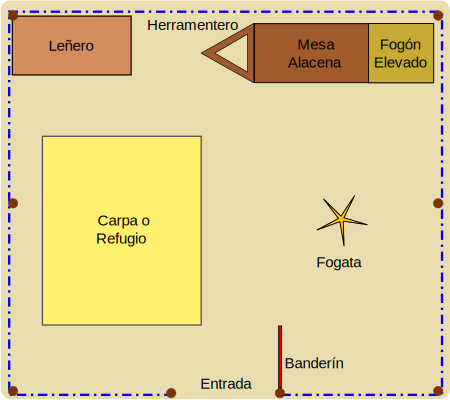
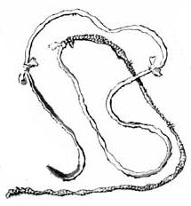

El Tabú o Rincón
Es el es el lugar que delimita y acondiciona tu Patrulla, para su uso exclusivo durante una excursión o campamento, los demás deberán respetar este espacio, solicitando permiso antes de entrar en él.
Durante este campamento, los rincones estarán ubicados en dos áreas separadas para las patrullas femeninas y masculinas, llamadas Tropa Femenina y Tropa Masculina respectivamente.
Los espacios para los rincones serán sorteados el día del evento, para así evitar malos entendidos y pugnas innecesarias.
¿Qué se evaluará en los Rincones de Patrulla?
Diseño y Distribución
Esto debe obedecer a un plan previo para ubicar cada elemento en un lugar determinado, de manera de hacer este espacio más cómodo y práctico. En esta misma página hay un ejemplo de cómo distribuir el Rincón de tu Patrulla, así como una sugerencia de las construcciones básicas que este debe tener.
Se sugiere que solo se construya lo verdaderamente necesario, como por ejemplo una sola estructura que sirva de mesa, alacena, herramentero y fogón elevado. Así se ahorra tiempo, esfuerzo y se daña menos el medio ambiente.
Impacto Ecológico
Nuestra "Madre Tierra” es el hogar de la raza humana, único e irremplazable, ella nos hospeda y da vida, por lo cual es deber de todo Scout protegerla. Cuando tomes materiales del entorno natural, procura causar el menor daño posible.
Se tomará muy en cuenta la utilización de materiales reciclados para las astucias de campamento.
Un buen ejemplo sería usar una soga hecha de trapos viejos para delimitar el tabú, mejor aún si se usan de los colores de la patrulla. Esta soga se puede guardar para usar en otras oportunidades con el mismo fin.
Orden y limpieza
Los rincones deberán estar lo mejor posible en todo momento, ya que la pulcritud y la organización son indispensables para una vida al aire libre plena, además que evita la perdida de objetos y minimiza el riesgo de accidentes.